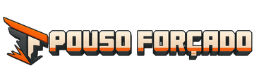

<title>Pouso Forçado</title>
<meta name="claude:viewport-fit-sides" content="cover">
<meta name="description" content="Pouso Forçado: Da Queda ao Recomeço. Wiki de sobrevivência do add-on para Minecraft Bedrock.">
<link rel="preconnect" href="https://fonts.googleapis.com">
<link rel="stylesheet" href="https://fonts.googleapis.com/css2?family=Russo+One&family=Barlow:ital,wght@0,400;0,500;0,600;0,700;1,400&display=swap">
<style>
/* Layout: cabeçalho fino, capa com foto do jogo, conteúdo em colunas separadas por linhas finas; faixa grafite para a nave. */
:root {
  --marfim: #f7f4ed; --papel: #fffdf8; --grafite: #20272b; --texto: #2c3438; --suave: #5d666b;
  --laranja: #e85d00; --laranja-texto: #c24d00; --areia: #e5d8c5; --linha: #ddd2c2; --faixa: #20272b; --faixa-texto: #f2ede4;
  --ciano: #1f8fb3;
  --display: "Russo One", "Arial Black", Impact, sans-serif;
  --corpo: "Barlow", "Segoe UI", Roboto, Arial, sans-serif;
  color-scheme: light;
}
@media (prefers-color-scheme: dark) { :root:not([data-theme="light"]) {
  --marfim: #171b1e; --papel: #1e2327; --grafite: #f1ebe0; --texto: #e2dbcf; --suave: #a7a198;
  --laranja: #ff7a24; --laranja-texto: #ff8c42; --areia: #2b2723; --linha: #3a3631; --faixa: #0e1113; --faixa-texto: #f2ede4; --ciano: #4fc3e6;
  color-scheme: dark; } }
:root[data-theme="dark"] {
  --marfim: #171b1e; --papel: #1e2327; --grafite: #f1ebe0; --texto: #e2dbcf; --suave: #a7a198;
  --laranja: #ff7a24; --laranja-texto: #ff8c42; --areia: #2b2723; --linha: #3a3631; --faixa: #0e1113; --faixa-texto: #f2ede4; --ciano: #4fc3e6;
  color-scheme: dark; }

* { box-sizing: border-box; }
body { margin: 0; background: var(--marfim); color: var(--texto); font: 17px/1.55 var(--corpo); }
body::before { content: ""; position: fixed; inset: 0 0 auto; height: env(safe-area-inset-top, 0px); z-index: 30; background: var(--papel); }
a { color: var(--laranja-texto); text-underline-offset: 3px; }
a:focus-visible, button:focus-visible, input:focus-visible, summary:focus-visible { outline: 3px solid var(--laranja); outline-offset: 2px; }
img.px, .px img { image-rendering: pixelated; }
h1, h2, h3 { font-family: var(--display); font-weight: 400; color: var(--grafite); line-height: 1.08; text-wrap: balance; margin: 0; }
.gut { padding-left: max(16px, env(safe-area-inset-left, 0px)); padding-right: max(16px, env(safe-area-inset-right, 0px)); }
.larg { max-width: 1180px; margin: 0 auto; }
.olho { font: 600 12px/1.3 var(--corpo); letter-spacing: .18em; text-transform: uppercase; color: var(--grafite); display: flex; align-items: center; gap: 10px; }
.olho::before { content: ""; width: 28px; height: 3px; background: var(--laranja); }
.traco { display: block; width: 44px; height: 4px; background: var(--laranja); margin-block: 14px 0; }
.seta::after { content: " →"; }
.link { font-weight: 600; text-decoration: underline; text-decoration-thickness: 2px; }
.botao { display: inline-flex; align-items: center; gap: 10px; min-height: 48px; padding: 0 22px; background: var(--laranja); color: #fff; font-weight: 700; font-size: 17px; text-decoration: none; border: 2px solid var(--laranja); }
.botao.fantasma { background: transparent; color: var(--laranja-texto); }
.botao svg { width: 20px; height: 20px; }
.nota { background: var(--areia); border-left: 5px solid var(--laranja); padding: 12px 16px; margin: 18px 0; }

/* Cabeçalho */
.topo { position: sticky; top: env(safe-area-inset-top, 0px); z-index: 20; background: var(--papel); border-bottom: 1px solid var(--linha); }
.topo .larg { display: flex; align-items: center; gap: 22px; min-height: 64px; }
.marca { display: flex; align-items: center; gap: 14px; text-decoration: none; color: var(--grafite); margin-right: auto; min-width: 0; }
.marca img { height: 52px; width: auto; }
.marca span { font: 600 12px/1.2 var(--corpo); letter-spacing: .16em; text-transform: uppercase; border-left: 1px solid var(--grafite); padding-left: 12px; white-space: nowrap; }
.nav { display: flex; gap: 22px; align-items: center; }
.nav a { color: var(--grafite); text-decoration: none; font-weight: 500; padding: 8px 2px; border-bottom: 3px solid transparent; }
.nav a[aria-current="page"] { border-color: var(--laranja); }
.lupa { width: 44px; height: 44px; display: grid; place-items: center; color: var(--grafite); }
.lupa svg { width: 24px; height: 24px; }
.menu { display: none; width: 44px; height: 44px; background: none; border: 1px solid var(--linha); color: var(--grafite); }
@media (max-width: 860px) {
  .marca span { display: none; }
  .menu { display: grid; place-items: center; }
  .nav { display: none; position: absolute; top: 100%; left: 0; right: 0; flex-direction: column; align-items: stretch; gap: 0; background: var(--papel); border-bottom: 1px solid var(--linha); padding-block: 6px; }
  .nav a { padding: 12px max(16px, env(safe-area-inset-left, 0px)); border: 0; min-height: 44px; }
  .topo.aberto .nav { display: flex; }
  .topo .botao { padding: 0 14px; }
  .topo .botao .rot { display: none; }
}

/* Capa */
.capa { position: relative; background: var(--areia) center/cover no-repeat; min-height: 420px; display: flex; align-items: center; }
.capa::before { content: ""; position: absolute; inset: 0; background: linear-gradient(90deg, var(--marfim) 0%, color-mix(in srgb, var(--marfim) 85%, transparent) 38%, transparent 70%); }
.capa .larg { position: relative; width: 100%; padding-block: 48px; }
.capa .olho { max-width: none; }
.capa h1 { font-size: clamp(42px, 7vw, 86px); max-width: 11ch; margin-top: 14px; }
.capa p { max-width: 34ch; margin: 18px 0 0; font-size: 19px; color: var(--grafite); }
.capa.baixa { min-height: 300px; }
.capa.baixa h1 { font-size: clamp(36px, 5.6vw, 64px); max-width: 14ch; }
@media (max-width: 700px) { .capa::before { background: linear-gradient(180deg, color-mix(in srgb, var(--marfim) 92%, transparent) 0%, color-mix(in srgb, var(--marfim) 80%, transparent) 70%, transparent 100%); } .capa { min-height: 360px; align-items: flex-start; } }

/* Busca */
.busca { display: flex; border: 1px solid var(--suave); background: var(--papel); max-width: 680px; }
.busca label { display: grid; place-items: center; width: 50px; color: var(--grafite); }
.busca input { flex: 1; min-width: 0; border: 0; background: transparent; font: inherit; font-size: 17px; color: var(--texto); padding: 12px 4px; }
.busca input:focus { outline: none; }
.busca button { width: 58px; border: 0; background: var(--laranja); color: #fff; cursor: pointer; }
.busca svg { width: 22px; height: 22px; }
.faixa-busca { background: var(--areia); }
.faixa-busca .larg { display: grid; grid-template-columns: auto 1fr; gap: 12px 40px; align-items: center; padding-block: 26px; }
.faixa-busca h2 { font-size: 26px; }
.meta { grid-column: 2; color: var(--suave); font-size: 14px; display: flex; gap: 10px; flex-wrap: wrap; }
.meta span + span::before { content: "•"; margin-right: 10px; }
@media (max-width: 700px) { .faixa-busca .larg { grid-template-columns: 1fr; } .meta { grid-column: 1; } }

/* Início */
.duas { display: grid; grid-template-columns: 1.15fr 1fr; gap: 48px; padding-block: 48px; }
.duas > * { min-width: 0; }
.duas > * + * { border-left: 1px solid var(--linha); padding-left: 48px; }
@media (max-width: 860px) { .duas { grid-template-columns: 1fr; } .duas > * + * { border-left: 0; padding-left: 0; border-top: 1px solid var(--linha); padding-top: 36px; } }
.agua { display: grid; grid-template-columns: 200px 1fr; gap: 26px; align-items: center; margin-top: 22px; }
.agua img { width: 200px; height: 200px; }
@media (max-width: 520px) { .agua { grid-template-columns: 1fr; } .agua img { width: 150px; height: 150px; } }
.cadeia { display: flex; align-items: flex-end; justify-content: space-between; gap: 8px; margin-top: 26px; flex-wrap: wrap; }
.cadeia figure { margin: 0; text-align: center; font-weight: 600; color: var(--grafite); }
.cadeia img { width: 88px; height: 88px; display: block; margin: 0 auto 6px; }
.cadeia .sep { color: var(--laranja); font-size: 28px; padding-bottom: 36px; }
.capitulos { display: grid; grid-template-columns: 1fr 1fr; column-gap: 34px; margin-top: 18px; }
.capitulos a { display: flex; gap: 18px; align-items: center; min-height: 56px; border-bottom: 1px solid var(--linha); color: var(--grafite); text-decoration: none; font-size: 19px; font-weight: 500; }
.capitulos a b { font-family: var(--display); font-weight: 400; color: var(--laranja-texto); font-size: 22px; width: 30px; }
@media (max-width: 520px) { .capitulos { grid-template-columns: 1fr; } }
.escuro { background: var(--faixa); color: var(--faixa-texto); }
.escuro h2, .escuro h3 { color: var(--faixa-texto); }
.sistemas { display: grid; grid-template-columns: minmax(220px, 1.3fr) repeat(4, 1fr) auto; gap: 0; align-items: center; padding-block: 28px; }
.sistemas .tit { border-left: 5px solid var(--laranja); padding-left: 20px; }
.sistemas .tit h2 { font-size: 32px; }
.sistemas .tit p { margin: 8px 0 0; }
.sistemas a.sis { display: grid; justify-items: center; gap: 6px; color: var(--faixa-texto); text-decoration: none; border-left: 1px solid #ffffff2e; padding: 6px 10px; font-weight: 600; }
.sistemas a.sis img { width: 78px; height: 78px; }
.sistemas .mais { padding-left: 16px; }
.sistemas .mais a { color: #ff8c42; }
@media (max-width: 860px) { .sistemas { grid-template-columns: repeat(2, 1fr); gap: 18px; } .sistemas .tit, .sistemas .mais { grid-column: 1 / -1; } .sistemas a.sis { border-left: 0; } }
.novas { display: grid; grid-template-columns: repeat(3, 1fr); gap: 0; border-top: 1px solid var(--linha); }
.novas a { display: grid; grid-template-columns: 64px 1fr; gap: 16px; align-items: center; padding: 22px 18px; color: var(--texto); text-decoration: none; border-bottom: 1px solid var(--linha); }
.novas a + a { border-left: 1px solid var(--linha); }
.novas img { width: 64px; height: 64px; }
.novas b { display: block; font-family: var(--display); font-weight: 400; color: var(--grafite); font-size: 19px; }
@media (max-width: 860px) { .novas { grid-template-columns: 1fr; } .novas a + a { border-left: 0; } }

/* Índice de guias */
.indice { display: grid; grid-template-columns: 1fr 1fr; gap: 0 56px; padding-block: 42px; }
.indice > div { min-width: 0; }
.grupo + .grupo { margin-top: 36px; }
.grupo h2 { font-size: 28px; display: flex; align-items: center; gap: 14px; margin-bottom: 8px; }
.grupo h2::before { content: ""; width: 40px; height: 4px; background: var(--laranja); flex: none; }
.guia { display: grid; grid-template-columns: 70px 170px 1fr; gap: 16px; align-items: center; min-height: 72px; padding-block: 8px; border-bottom: 1px solid var(--linha); color: var(--texto); text-decoration: none; }
.guia img { width: 60px; height: 60px; }
.guia b { font-size: 19px; color: var(--grafite); }
.guia span { color: var(--suave); font-size: 15px; }
.guia:hover b, .guia:focus-visible b { color: var(--laranja-texto); }
@media (max-width: 1000px) { .indice { grid-template-columns: 1fr; } }
@media (max-width: 560px) { .guia { grid-template-columns: 56px 1fr; } .guia img { width: 48px; height: 48px; } .guia span { grid-column: 2; } }

/* Artigo */
.artigo { display: grid; grid-template-columns: 210px minmax(0, 1fr) 220px; gap: 0; }
.lateral { border-right: 1px solid var(--linha); padding-block: 36px; padding-right: 20px; }
.lateral h2, .nesta h2 { font: 700 13px/1.2 var(--corpo); letter-spacing: .16em; text-transform: uppercase; color: var(--grafite); }
.lateral h2::before, .nesta h2::before { content: ""; display: block; width: 32px; height: 4px; background: var(--laranja); margin-bottom: 12px; }
.lateral nav { display: grid; margin-top: 10px; }
.lateral nav a { color: var(--texto); text-decoration: none; padding: 8px 16px; min-height: 40px; display: flex; align-items: center; border-left: 4px solid transparent; }
.lateral nav a[aria-current="page"] { background: color-mix(in srgb, var(--laranja) 12%, transparent); border-color: var(--laranja); color: var(--laranja-texto); }
.lateral details summary { display: none; }
.corpo { padding: 28px 40px 48px; min-width: 0; }
.trilha { font-size: 14px; color: var(--suave); display: flex; gap: 8px; flex-wrap: wrap; margin-bottom: 18px; }
.trilha a { color: var(--texto); text-decoration: none; }
.trilha span::before { content: "/"; margin-right: 8px; }
.cab-art { display: grid; grid-template-columns: 1fr auto; gap: 20px; align-items: center; }
.cab-art h1 { font-size: clamp(34px, 5vw, 58px); margin-top: 12px; }
.cab-art p { font-size: 19px; margin: 12px 0 0; max-width: 46ch; }
.cab-art img { width: 170px; height: 170px; }
.corpo section { margin-top: 38px; max-width: 760px; }
.corpo section > h2 { font-size: 30px; }
.corpo section > h2::before { content: ""; display: block; width: 44px; height: 4px; background: var(--laranja); margin-bottom: 12px; }
.corpo p, .corpo li { max-width: 68ch; }
.corpo img.mini { width: 28px; height: 28px; vertical-align: middle; margin-right: 6px; }
.corpo ol.passos { list-style: none; padding: 0; counter-reset: p; }
.corpo ol.passos li { counter-increment: p; display: grid; grid-template-columns: 44px 1fr; gap: 8px; margin: 10px 0; }
.corpo ol.passos li::before { content: counter(p, decimal-leading-zero); font-family: var(--display); color: var(--laranja-texto); font-size: 22px; line-height: 1.2; }
.corpo .tabela { overflow-x: auto; border: 1px solid var(--linha); margin: 16px 0; }
.corpo table { border-collapse: collapse; width: 100%; font-size: 16px; }
.corpo th { background: var(--areia); text-align: left; color: var(--grafite); }
.corpo th, .corpo td { padding: 10px 14px; border-bottom: 1px solid var(--linha); vertical-align: top; }
.corpo tbody tr:last-child td { border-bottom: 0; }
.corpo .dica { background: var(--areia); border-left: 5px solid var(--laranja); padding: 12px 16px; display: grid; gap: 4px; margin: 16px 0; }
.corpo .galeria { display: grid; grid-template-columns: repeat(2, 1fr); gap: 12px; }
.corpo .galeria figure { margin: 0; }
.corpo .galeria img { width: 100%; aspect-ratio: 16/9; object-fit: cover; }
.corpo .galeria figcaption { font-size: 14px; color: var(--suave); }
.corpo .num { font-variant-numeric: tabular-nums; font-weight: 600; }
.corpo code { background: var(--areia); padding: 1px 6px; }
.vizinhos { display: flex; justify-content: space-between; gap: 16px; border-top: 1px solid var(--linha); margin-top: 44px; padding-top: 18px; max-width: 760px; }
.nesta { padding-block: 36px; padding-left: 24px; border-left: 1px solid var(--linha); }
.nesta nav { position: sticky; top: calc(env(safe-area-inset-top, 0px) + 84px); display: grid; margin-top: 10px; }
.nesta nav a { color: var(--texto); text-decoration: none; padding: 8px 0; border-bottom: 1px solid var(--linha); }
@media (max-width: 1100px) { .artigo { grid-template-columns: 200px minmax(0, 1fr); } .nesta { display: none; } }
@media (max-width: 760px) {
  .artigo { grid-template-columns: 1fr; }
  .lateral { border-right: 0; border-bottom: 1px solid var(--linha); padding-block: 12px; padding-right: 0; }
  .lateral h2 { display: none; }
  .lateral details summary { display: flex; align-items: center; justify-content: space-between; min-height: 48px; font-weight: 700; color: var(--grafite); cursor: pointer; }
  .lateral details:not([open]) nav { display: none; }
  .corpo { padding: 20px 0 40px; }
  .cab-art { grid-template-columns: 1fr; } .cab-art img { width: 120px; height: 120px; order: -1; }
  .corpo .galeria { grid-template-columns: 1fr; }
}

/* Máquinas */
.maq { display: grid; grid-template-columns: minmax(0, 1fr) minmax(0, 1fr); gap: 0 32px; margin-top: 26px; }
.abas { display: flex; gap: 6px 22px; flex-wrap: wrap; border-bottom: 1px solid var(--linha); margin-top: 22px; }
.abas button { background: none; border: 0; border-bottom: 3px solid transparent; padding: 10px 2px; font: 500 16px var(--corpo); color: var(--texto); cursor: pointer; min-height: 44px; }
.abas button[aria-selected="true"] { border-color: var(--laranja); color: var(--laranja-texto); font-weight: 700; }
.lista-maq { display: grid; border: 1px solid var(--linha); align-self: start; }
.lista-maq button { display: grid; grid-template-columns: 70px 1fr auto; gap: 14px; align-items: center; text-align: left; background: var(--papel); border: 0; border-bottom: 1px solid var(--linha); padding: 12px 16px; font: inherit; color: var(--texto); cursor: pointer; }
.lista-maq button:last-child { border-bottom: 0; }
.lista-maq button[aria-pressed="true"] { background: color-mix(in srgb, var(--laranja) 12%, var(--papel)); }
.lista-maq img { width: 64px; height: 64px; }
.lista-maq b { display: block; font-size: 18px; color: var(--grafite); }
.lista-maq .seta::after { color: var(--laranja); }
.detalhe { min-width: 0; }
.detalhe .cab { display: grid; grid-template-columns: 1fr 150px; gap: 12px; align-items: center; }
.detalhe img.grande { width: 150px; height: 150px; }
.detalhe h2 { font-size: clamp(32px, 4vw, 48px); margin-top: 10px; }
.custo { display: grid; grid-template-columns: 1fr 1fr; border: 1px solid var(--linha); margin: 18px 0; }
.custo div { padding: 10px 14px; font-weight: 700; color: var(--grafite); }
.custo div:first-child { background: var(--areia); }
@media (max-width: 860px) { .maq { grid-template-columns: 1fr; gap: 26px; } .detalhe .cab { grid-template-columns: 1fr 100px; } .detalhe img.grande { width: 100px; height: 100px; } }

/* Nave */
.sis-lista a { display: grid; grid-template-columns: 150px 1fr auto; gap: 24px; align-items: center; min-height: 110px; border-bottom: 1px solid var(--linha); color: var(--texto); text-decoration: none; }
.sis-lista a:first-child { border-top: 1px solid var(--linha); }
.sis-lista img { width: 96px; height: 96px; justify-self: center; }
.sis-lista h3 { font-size: 30px; }
@media (max-width: 600px) { .sis-lista a { grid-template-columns: 80px 1fr; } .sis-lista img { width: 64px; height: 64px; } .sis-lista .link { grid-column: 2; } }
.passos-nave { display: grid; gap: 14px; }
.passos-nave div { display: grid; grid-template-columns: 40px 64px 1fr; gap: 16px; align-items: center; }
.passos-nave b { background: var(--laranja); color: #fff; font-family: var(--display); font-weight: 400; display: grid; place-items: center; height: 36px; }
.passos-nave img { width: 64px; height: 64px; }
.lua { background: var(--faixa); color: var(--faixa-texto); padding: 28px; border-left: 6px solid var(--laranja); display: grid; grid-template-columns: 1fr 120px; gap: 20px; align-items: center; }
.lua h3 { color: var(--faixa-texto); font-size: 30px; }
.lua a { color: #ff8c42; }
.lua img { width: 120px; height: 120px; }

/* Instalar, busca, novidades */
.pacotes { display: grid; grid-template-columns: 1fr 1fr; gap: 0; border: 1px solid var(--linha); background: var(--papel); }
.pacotes > div { display: grid; grid-template-columns: 140px 1fr; gap: 22px; padding: 26px; align-items: center; min-width: 0; }
.pacotes > div + div { border-left: 1px solid var(--linha); }
.pacotes img { width: 140px; height: 140px; }
.pacotes h2 { font-size: 30px; }
.pacotes code { background: var(--areia); padding: 2px 8px; font-size: 15px; display: inline-block; margin: 10px 0; }
@media (max-width: 860px) { .pacotes { grid-template-columns: 1fr; } .pacotes > div + div { border-left: 0; border-top: 1px solid var(--linha); } .pacotes > div { grid-template-columns: 90px 1fr; } .pacotes img { width: 90px; height: 90px; } }
.passos3 { display: grid; grid-template-columns: repeat(3, 1fr); gap: 26px; }
.passos3 > div { display: grid; grid-template-columns: auto 1fr; gap: 6px 14px; }
.passos3 b.n { font-family: var(--display); font-weight: 400; color: var(--laranja-texto); font-size: 28px; }
.passos3 h3 { font-size: 21px; }
@media (max-width: 860px) { .passos3 { grid-template-columns: 1fr; } }
.faq details { border-bottom: 1px solid var(--linha); }
.faq summary { min-height: 52px; display: flex; align-items: center; justify-content: space-between; gap: 10px; font-weight: 600; color: var(--grafite); cursor: pointer; list-style: none; }
.faq summary::after { content: "+"; color: var(--laranja); font-size: 24px; }
.faq details[open] summary::after { content: "−"; }
.faq p { margin: 0 0 14px; color: var(--suave); }
.result { display: grid; grid-template-columns: 110px 1fr auto; gap: 20px; align-items: center; padding-block: 16px; border-bottom: 1px solid var(--linha); color: var(--texto); text-decoration: none; }
.result img { width: 96px; height: 96px; justify-self: center; }
.result .onde { font-size: 14px; color: var(--suave); }
.result h3 { font-size: 24px; margin: 2px 0; }
.result p { margin: 0; color: var(--suave); }
.result mark { background: color-mix(in srgb, var(--laranja) 25%, transparent); color: inherit; }
@media (max-width: 600px) { .result { grid-template-columns: 64px 1fr; } .result img { width: 56px; height: 56px; } .result .seta { display: none; } }
.vazio { padding: 36px 0; color: var(--suave); }
.lado-busca { display: grid; grid-template-columns: minmax(0, 1fr) 280px; gap: 48px; }
.lado-busca aside a { display: flex; justify-content: space-between; min-height: 52px; align-items: center; border-bottom: 1px solid var(--linha); color: var(--grafite); text-decoration: none; font-size: 19px; }
.lado-busca aside a::after { content: "→"; color: var(--laranja); }
@media (max-width: 900px) { .lado-busca { grid-template-columns: 1fr; } }
.novidade { display: grid; grid-template-columns: 220px 1fr; gap: 28px; padding-block: 34px; border-top: 1px solid var(--linha); align-items: center; }
.novidade img { width: 180px; height: 180px; justify-self: center; }
.novidade h2 { font-size: 36px; }
.novidade ul { padding-left: 20px; }
.novidade li::marker { color: var(--laranja); }
@media (max-width: 700px) { .novidade { grid-template-columns: 1fr; } .novidade img { width: 110px; height: 110px; justify-self: start; } }
.secao { padding-block: 44px; }
.secao > h2 { font-size: 34px; }
.rodape { border-top: 1px solid var(--linha); background: var(--papel); }
.rodape .larg { display: flex; justify-content: space-between; gap: 10px 24px; flex-wrap: wrap; padding-block: 18px; font-size: 14px; color: var(--suave); }
.rodape b { color: var(--grafite); }
.carregando { padding: 60px 0; color: var(--suave); }
@media (prefers-reduced-motion: no-preference) { .vista { animation: entra .25s ease-out; } @keyframes entra { from { opacity: .4; transform: translateY(6px); } to { opacity: 1; transform: none; } } }
</style>

<header class="topo gut" id="topo">
  <div class="larg">
    <a class="marca" href="#inicio" aria-label="Pouso Forçado: início"><span>Wiki de sobrevivência</span></a>
    <nav class="nav" id="nav" aria-label="Principal">
      <a href="#mundo" data-r="mundo">O mundo</a>
      <a href="#guias" data-r="guias">Guias</a>
      <a href="#instalar" data-r="instalar">Instalar</a>
    </nav>
    <a class="botao" href="#instalar"><svg viewBox="0 0 24 24" fill="none" stroke="currentColor" stroke-width="2.4" aria-hidden="true"><path d="M12 4v11M7 10l5 5 5-5M5 20h14"/></svg><span class="rot">Baixar add-on</span></a>
    <a class="lupa" href="#busca" aria-label="Buscar"><svg viewBox="0 0 24 24" fill="none" stroke="currentColor" stroke-width="2.2" aria-hidden="true"><circle cx="10.5" cy="10.5" r="6.5"/><path d="M15.5 15.5 21 21"/></svg></a>
    <button class="menu" id="menu" aria-expanded="false" aria-controls="nav" aria-label="Menu"><svg width="22" height="22" viewBox="0 0 24 24" fill="none" stroke="currentColor" stroke-width="2.2" aria-hidden="true"><path d="M4 7h16M4 12h16M4 17h16"/></svg></button>
  </div>
</header>
<main id="app"><p class="carregando gut">Carregando o manual…</p></main>
<footer class="rodape gut"><div class="larg"><span><b>Pouso Forçado: Da Queda ao Recomeço</b> · Add-on gratuito para Minecraft Bedrock · <span id="ver"></span></span><span><a href="#creditos">Créditos</a> · Projeto independente. Não oficial da Mojang.</span></div></footer>

<script src="dados.js"></script>
<script>
(() => {
  const D = window.DADOS;
  const app = document.getElementById("app");
  if (!D) { app.innerHTML = '<p class="vazio gut">Não deu para carregar os textos do manual. Recarregue a página.</p>'; return; }
  document.getElementById("ver").textContent = "v" + D.versao;
  const esc = (s) => String(s).replace(/[&<>"]/g, (c) => ({ "&": "&amp;", "<": "&lt;", ">": "&gt;", '"': "&quot;" })[c]);
  const ic = (id) => `img/oficiais/${id}.png`;
  const guia = (id) => D.guias.find((g) => g.id === id);
  const lupa = '<svg viewBox="0 0 24 24" fill="none" stroke="currentColor" stroke-width="2.2" aria-hidden="true"><circle cx="10.5" cy="10.5" r="6.5"/><path d="M15.5 15.5 21 21"/></svg>';
  const seta = '<svg viewBox="0 0 24 24" fill="none" stroke="currentColor" stroke-width="2.4" aria-hidden="true"><path d="M5 12h14M13 6l6 6-6 6"/></svg>';
  const baixar = '<svg viewBox="0 0 24 24" fill="none" stroke="currentColor" stroke-width="2.4" aria-hidden="true"><path d="M12 4v11M7 10l5 5 5-5M5 20h14"/></svg>';
  const caixaBusca = (id, ph, valor = "") => `<form class="busca" data-busca role="search"><label for="${id}">${lupa}<span hidden>Buscar</span></label><input id="${id}" type="search" placeholder="${ph}" value="${esc(valor)}" autocomplete="off"><button aria-label="Buscar">${seta}</button></form>`;
  const capa = (img, olho, titulo, texto, extra = "", baixa = false) => `<section class="capa gut ${baixa ? "baixa" : ""}" style="background-image:url('${img}')"><div class="larg">${olho ? `<p class="olho">${olho}</p>` : ""}<h1>${titulo}</h1>${texto ? `<p>${texto}</p>` : ""}${extra}</div></section>`;
  const trilha = (...p) => `<nav class="trilha" aria-label="Você está em"><a href="#inicio">Início</a>${p.map((x) => `<span>${x}</span>`).join("")}</nav>`;
  let busca = "";
  let maqAtual = "pulverizador", maqAba = "Todas";

  const inicio = () => {
    const prim = ["comecar", "sobreviver", "nihilo", "energia", "maquinas", "ferramentas", "armazenamento", "explorar"].map(guia);
    const sis = [["placa_casco", "Casco"], ["computador_bordo", "Computador"], ["celula_combustivel", "Combustível"], ["motor_nave", "Motor"]];
    return capa("img/mundo/capa_aviao.jpg", "Um planeta hostil. Uma chance de voltar.", "Da queda ao recomeço.", "Comece com os destroços. Aprenda a sobreviver. Construa o caminho de volta.")
      + `<section class="faixa-busca gut"><div class="larg"><h2>Encontre no manual</h2>${caixaBusca("b-inicio", "Digite um item, máquina ou dúvida…")}<p class="meta"><span>v${D.versao}</span><span>Bedrock 26.30+</span><span>${D.capitulos} capítulos de missões</span></p></div></section>`
      + `<div class="gut"><div class="larg duas"><div><p class="olho">Primeiro dia</p><h2 style="font-size:clamp(30px,4vw,42px);margin-top:12px">Antes de pensar em decolar, encontre água.</h2>
        <div class="agua"><div><p>Seu primeiro abrigo é a nave. Pegue o Condensador de Água no porão e prepare-se para a primeira noite.</p><a class="link seta" href="#g-sobreviver">Abrir o guia da água</a></div></div>
        <div class="cadeia"><figure>Água</figure><span class="sep" aria-hidden="true">→</span><figure>Abrigo</figure><span class="sep" aria-hidden="true">→</span><figure>Recursos</figure></div></div>
        <div><span class="traco"></span><h2 style="font-size:clamp(28px,3.4vw,38px);margin-top:12px">Abra o capítulo certo</h2><div class="capitulos">${prim.map((g, k) => `<a href="#g-${g.id}"><b>${String(k + 1).padStart(2, "0")}</b>${esc(g.titulo)}</a>`).join("")}</div><p style="margin-top:22px"><a class="link seta" href="#guias">Ver todos os guias</a></p></div></div></div>`
      + `<section class="escuro gut"><div class="larg sistemas"><div class="tit"><h2>O objetivo é voltar para casa.</h2><p>Conheça os quatro sistemas que você precisa reparar, e a última peça, na Lua.</p></div>${sis.map(([i, n]) => `<a class="sis" href="#nave">${n}</a>`).join("")}<p class="mais"><a class="link seta" href="#nave">Guia da nave</a></p></div></section>`
      + `<section class="gut"><div class="larg secao"><p class="olho">Versão ${D.versao}</p><h2 style="margin:12px 0 18px">Novo no Pouso Forçado</h2><div class="novas">
        <a href="#g-farmers"><span><b>Farmer's Delight</b>Panela, tábua, fogão e comidas com Nutrição.</span></a>
        <a href="#g-quark"><span><b>Quark</b>Picarango, colheita com toque e blocos novos.</span></a>
        <a href="#g-additions"><span><b>Mekanism Additions</b>Plásticos, balões e condutos do Ender IO.</span></a>
      </div><p style="margin-top:18px"><a class="link seta" href="#novidades">Ver as novidades</a></p></div></section>`;
  };

  const guias = () => capa("img/mundo/capa_destrocos.jpg", "Manual de sobrevivência", "Todo caminho começa com um guia.", "Encontre o que precisa para sobreviver, construir e voltar para casa.", `<div style="margin-top:22px">${caixaBusca("b-guias", "Buscar nos guias…")}</div>`, true)
    + `<div class="gut"><div class="larg indice">` + [[D.grupos[0], D.grupos[2]], [D.grupos[1]]].map((col) => `<div>${col.map((gr) => `<div class="grupo"><h2>${esc(gr)}</h2>${D.guias.filter((g) => g.grupo === gr).map((g) => `<a class="guia" href="#g-${g.id}">${g.icone ? `` : "<span></span>"}<b>${esc(g.titulo)}</b><span>${esc(g.desc)}</span></a>`).join("")}</div>`).join("")}</div>`).join("") + `</div></div>`
    + `<section class="escuro gut"><div class="larg sistemas" style="grid-template-columns:auto 1fr auto"><div class="tit"><h2 style="font-size:28px">Não sabe por onde começar?</h2><p>Veja um passo a passo com tudo o que você precisa nos primeiros minutos.</p></div><p class="mais"><a class="link seta" href="#g-comecar">Veja os primeiros minutos</a></p></div></section>`;

  const lateral = (atual) => `<aside class="lateral"><details id="lat"><summary>Guias: ${esc(guia(atual)?.titulo ?? "")}</summary><h2>Guias</h2><nav aria-label="Guias">${D.guias.map((g) => `<a href="#g-${g.id}" ${g.id === atual ? 'aria-current="page"' : ""}>${esc(g.titulo)}</a>`).join("")}</nav></details></aside>`;
  const artigo = (g, extraTopo = "") => {
    const k = D.guias.indexOf(g), ant = D.guias[k - 1], prox = D.guias[k + 1];
    return `<div class="gut"><div class="larg artigo">${lateral(g.id)}<article class="corpo">${trilha(`<a href="#guias">Guias</a>`, esc(g.titulo))}
      <div class="cab-art"><div><p class="olho">${esc(g.grupo)}</p><h1>${g.h1}</h1><p>${g.resumo}</p></div>${g.icone ? `` : ""}</div>${extraTopo}
      ${g.secoes.map((s) => `<section id="${s.id}"><h2>${esc(s.titulo)}</h2>${s.html}</section>`).join("")}
      <nav class="vizinhos" aria-label="Outros guias">${ant ? `<a class="link" href="#g-${ant.id}">← ${esc(ant.titulo)}</a>` : "<span></span>"}${prox ? `<a class="link" href="#g-${prox.id}">${esc(prox.titulo)} →</a>` : ""}</nav></article>
      <aside class="nesta"><h2>Nesta página</h2><nav aria-label="Nesta página">${g.secoes.map((s) => `<a href="#" data-ir="${s.id}">${esc(s.titulo)}</a>`).join("")}</nav></aside></div></div>`;
  };

  const maquinas = () => {
    const mods = ["Todas", ...new Set(D.maquinas.map((m) => m.mod))];
    const lista = D.maquinas.filter((m) => maqAba === "Todas" || m.mod === maqAba);
    const m = D.maquinas.find((x) => x.id === maqAtual) ?? lista[0];
    return `<div class="gut"><div class="larg artigo" style="grid-template-columns:210px minmax(0,1fr)">${lateral("maquinas")}<div class="corpo">${trilha(`<a href="#guias">Guias</a>`, "Máquinas")}
      <span class="traco"></span><h1 style="font-size:clamp(34px,5vw,60px);margin-top:12px;max-width:16ch">Máquinas para transformar o deserto.</h1><p style="font-size:19px">Conheça o que cada máquina faz e o que ela consome.</p>
      ${caixaBusca("b-maq", "Buscar máquina…")}
      <div class="abas" role="tablist" aria-label="Mods">${mods.map((x) => `<button role="tab" aria-selected="${x === maqAba}" data-aba="${esc(x)}">${esc(x)}</button>`).join("")}</div>
      <div class="maq"><div class="lista-maq">${lista.map((x) => `<button aria-pressed="${x.id === m.id}" data-maq="${x.id}"><span><b>${esc(x.nome)}</b>${esc(x.desc)}</span><span class="seta" aria-hidden="true"></span></button>`).join("")}</div>
      <div class="detalhe" id="detalhe" tabindex="-1"><div class="cab"><div><p class="olho">${esc(m.mod)}</p><h2>${esc(m.nome)}</h2></div></div><p>${esc(m.desc)}</p>
      ${m.custo ? `<div class="custo"><div>Energia por operação</div><div>${esc(m.custo)}</div></div>` : ""}
      <span class="traco"></span><h3 style="font-size:28px;margin:12px 0">O que ela processa</h3>
      <div class="corpo" style="padding:0"><div class="tabela"><table><thead><tr><th>Entrada</th><th>Saída</th></tr></thead><tbody>${m.linhas.map(([a, b]) => `<tr><td>${esc(a)}</td><td>${esc(b)}</td></tr>`).join("")}</tbody></table></div></div>
      <p class="nota">${esc(m.nota)}</p><nav class="vizinhos" style="max-width:none"><a class="link" href="#g-energia">← Como gerar energia</a><a class="link" href="#g-maquinas">Guia completo das máquinas →</a></nav></div></div></div></div></div>`;
  };

  const nave = () => {
    const sis = [["placa_casco", "Casco", "12 Placas de Casco + 8 vidros"], ["computador_bordo", "Computador de Bordo", "1 Computador de Bordo"], ["celula_combustivel", "Combustível", "8 Células de Combustível"], ["motor_nave", "Motor", "1 Motor da Nave"]];
    return capa("img/mundo/capa_aviao.jpg", "O caminho de volta", "Repare a nave. Prepare a volta.", "O Painel da Nave mostra as peças que faltam para restaurar cada sistema.", "", true)
      + `<div class="gut"><div class="larg secao">${trilha(`<a href="#guias">Guias</a>`, "Nave")}<span class="traco"></span><h2 style="font-size:36px;margin:12px 0 18px">Os quatro sistemas</h2>
        <div class="sis-lista">${sis.map(([i, n, p]) => `<a href="#g-nave"><div><h3>${n}</h3><p style="margin:4px 0 0">${p}</p></div><span class="link seta">Ver peças</span></a>`).join("")}</div>
        <div class="duas"><div><span class="traco"></span><h2 style="font-size:30px;margin:12px 0 18px">Como instalar as peças</h2><div class="passos-nave">
          <div><b>01</b><span>Leve as peças na mochila (no inventário).</span></div>
          <div><b>02</b><span>Toque no Painel da Nave, na cabine do avião.</span></div>
          <div><b>03</b><span>Escolha Instalar para consertar o sistema para o mundo todo.</span></div></div>
          <p style="margin-top:18px">As peças saem da <strong>Montadora</strong>: <a href="#g-nave">veja os ingredientes</a>.</p></div>
          <div><div class="lua"><div><h3>A última peça está na Lua.</h3><p>Com os 4 sistemas prontos, o painel mostra a Bobina de Salto queimada. O Núcleo de Salto fica na Base de Pesquisa Lunar, com o Esqueleto Evoluído Gigante.</p><a class="link seta" href="#g-lua">Abrir o guia da Lua</a></div></div></div></div>
        <nav class="vizinhos" style="max-width:none"><a class="link" href="#maquinas">← Máquinas e energia</a><a class="link" href="#g-lua">A Lua →</a></nav></div></div>`;
  };

  const instalar = () => capa("img/mundo/capa_templo.jpg", "Comece a jornada", "Seu próximo mundo começa aqui.", "Baixe o pacote e abra o arquivo com o Minecraft.", `<p class="meta" style="margin-top:14px;grid-column:auto"><span>Versão ${D.versao}</span><span>Minecraft Bedrock 26.30+</span></p>`, true)
    + `<div class="gut"><div class="larg secao">${trilha("Instalar")}
      <div class="pacotes"><div><div><h2>Pacote completo</h2><code>pouso-forcado.mcaddon</code><p>Os três pacotes e o mundo prontos para importar. ${D.tamanho.mcaddon}.</p><a class="botao" href="${D.baixar.mcaddon}" rel="noopener">${baixar}Baixar o add-on</a></div></div>
      <div><div><h2>Só o mundo</h2><code>pouso-forcado.mcworld</code><p>Alternativa caso o mundo não apareça na lista. ${D.tamanho.mcworld}.</p><a class="botao fantasma" href="${D.baixar.mcworld}" rel="noopener">${baixar}Baixar o mundo</a></div></div></div>
      <h2 style="font-size:32px;margin:40px 0 20px">Instalar no celular</h2><div class="passos3">
        <div><b class="n">01</b><div><h3>Abra o arquivo baixado</h3><p>Escolha o Minecraft para importar. No Android, se o gerenciador não abrir, mande o arquivo pelo Telegram para você mesmo e toque nele lá.</p></div></div>
        <div><b class="n">02</b><div><h3>Encontre o mundo</h3><p>Na aba Mundos, abra Pouso Forçado. Ele já vem com tudo ativado.</p></div></div>
        <div><b class="n">03</b><div><h3>Ative o visual do menu</h3><p>Configurações → Recursos Globais → Meus Pacotes → Pouso Forçado (Menu) → Ativar.</p></div></div></div>
      <p class="nota">O mundo já inclui os pacotes. Não é preciso ativar experimentos.</p>
      <div class="duas" style="padding-block:20px 0"><div><span class="traco"></span><h2 style="font-size:32px;margin-top:12px">Precisa de ajuda?</h2><p><a class="link seta" href="#g-comecar">Pronto? Veja os primeiros minutos</a></p></div>
      <div class="faq"><details open><summary>O arquivo não abre no Android</summary><p>Confira se terminou de baixar e escolha Abrir com o Minecraft. Se não aparecer a opção, mande o arquivo pelo Telegram para você mesmo e abra por lá.</p></details>
      <details><summary>O mundo não apareceu</summary><p>Baixe o pouso-forcado.mcworld e abra com o Minecraft: ele entra direto na aba Mundos.</p></details>
      <details><summary>Como saber a versão</summary><p>Ao entrar no mundo, a versão aparece na linha cinza do chat. Cada versão nova vem como um mundo novo; os antigos continuam na versão deles.</p></details></div></div></div></div>`;

  // Busca: guias (título, resumo e o texto das seções) e máquinas.
  const textoDe = (h) => h.replace(/<[^>]+>/g, " ").replace(/\s+/g, " ");
  const sem = (s) => s.normalize("NFD").replace(/[̀-ͯ]/g, "").toLowerCase();
  const INDICE = [
    ...D.guias.flatMap((g) => [{ tipo: "Guias", onde: [g.grupo], titulo: g.titulo, texto: textoDe(g.resumo), href: `#g-${g.id}`, img: g.icone }, ...g.secoes.map((s) => ({ tipo: "Guias", onde: [g.titulo], titulo: s.titulo, texto: textoDe(s.html), href: `#g-${g.id}`, ir: s.id, img: g.icone }))]),
    ...D.maquinas.map((m) => ({ tipo: "Máquinas", onde: ["Máquinas", m.mod], titulo: m.nome, texto: `${m.desc} ${m.linhas.flat().join(" ")}`, href: "#maquinas", maq: m.id, img: m.icone })),
  ];
  const trecho = (t, q) => {
    const i = sem(t).indexOf(q);
    if (i < 0) return esc(t.slice(0, 150)) + (t.length > 150 ? "…" : "");
    const a = Math.max(0, i - 60), b = Math.min(t.length, i + q.length + 90);
    return (a ? "…" : "") + esc(t.slice(a, i)) + "<mark>" + esc(t.slice(i, i + q.length)) + "</mark>" + esc(t.slice(i + q.length, b)) + (b < t.length ? "…" : "");
  };
  let filtro = "Todos";
  const resultados = () => {
    const q = sem(busca.trim());
    if (!q) return `<p class="vazio">Digite o nome de um item, máquina ou dúvida. Exemplos: água, peneira, foguete.</p>`;
    const achados = INDICE.map((r) => ({ r, n: (sem(r.titulo).includes(q) ? 10 : 0) + (sem(r.texto).includes(q) ? 1 : 0) })).filter((x) => x.n && (filtro === "Todos" || x.r.tipo === filtro)).sort((a, b) => b.n - a.n).slice(0, 30);
    if (!achados.length) return `<p class="vazio">Nada encontrado para “${esc(busca)}”. Tente o nome do item ou <a href="#guias">explore os guias</a>.</p>`;
    return achados.map(({ r }) => `<a class="result" href="${r.href}" ${r.ir ? `data-ir="${r.ir}"` : ""} ${r.maq ? `data-maq-link="${r.maq}"` : ""}>${r.img ? `` : "<span></span>"}<div><div class="onde">${r.onde.map(esc).join(" › ")}</div><h3>${esc(r.titulo)}</h3><p>${trecho(r.texto, q)}</p></div><span class="link seta" aria-hidden="true"></span></a>`).join("");
  };
  const buscaV = () => `<div class="gut"><div class="larg secao">${trilha("Buscar")}<p class="olho">Encontre no manual</p><h1 style="font-size:clamp(34px,5.5vw,62px);margin:12px 0 22px">O que você precisa saber?</h1>
    <div class="lado-busca"><div>${caixaBusca("b-busca", "Digite um item, máquina ou dúvida…", busca)}<h2 style="font-size:26px;margin:28px 0 10px" id="res-tit">${busca ? `Resultados para “${esc(busca)}”` : "Resultados"}</h2>
    <div class="abas" role="tablist" aria-label="Filtrar">${["Todos", "Guias", "Máquinas"].map((x) => `<button role="tab" aria-selected="${x === filtro}" data-filtro="${x}">${x}</button>`).join("")}</div><div id="resultados" aria-live="polite">${resultados()}</div></div>
    <aside><h2 style="font-size:28px">Buscas úteis</h2>${["Peneira", "Energia", "Nave", "Comida", "Oxigênio"].map((x) => `<a href="#busca" data-sugestao="${x}">${x}</a>`).join("")}<h2 style="font-size:26px;margin-top:34px">Não encontrou?</h2><p>Tente o nome do item ou explore os guias.</p><a class="link seta" href="#guias">Ver todos os guias</a></aside></div></div></div>`;

  const novidades = () => capa("img/mundo/capa_cidade.jpg", `Versão ${D.versao}`, "Mais formas de sobreviver. Mais motivos para explorar.", "Cozinhe, construa e descubra novas utilidades.", `<p class="meta" style="margin-top:14px"><span>${D.capitulos} capítulos de missões</span><span>Minecraft Bedrock 26.30+</span></p>`, true)
    + `<div class="gut"><div class="larg">${[
      ["repolho", "Farmer's Delight", "Uma cozinha completa para transformar a colheita em comida de verdade.", ["Facas, Tábua de Cortar, Panela de Cozinha e Fogão.", "Repolho, palha, lona, corda e caixotes.", "Cerca de 45 comidas, com Nutrição e Conforto."], "farmers", "Abrir o guia de cozinha"],
      ["picarango", "Quark", "Mais opções para construir e cuidar da base.", ["Jaspe, xisto, blocos de armazenamento e vidro emoldurado.", "Picarango, lanterna de papel e placa de ferro.", "Colheita com toque, portas duplas e corda escalável."], "quark", "Explorar o Quark"],
      ["separador_eletrolitico", "Mekanism Additions e Ender IO", "Também na 1.11.", ["Plásticos em 16 cores e Painéis Brilhantes.", "Balões e TNT de Obsidiana.", "Condutos de Energia e de Itens."], "additions", "Ver o guia"],
    ].map(([i, t, d, l, g, a]) => `<section class="novidade"><div><span class="traco"></span><h2 style="margin-top:12px">${t}</h2><p>${d}</p><ul>${l.map((x) => `<li>${x}</li>`).join("")}</ul><a class="link seta" href="#g-${g}">${a}</a></div></section>`).join("")}</div></div>
    <section class="escuro gut"><div class="larg sistemas" style="grid-template-columns:1fr auto"><div class="tit"><h2>A jornada continua.</h2><p>Consulte os guias e siga o Diário de Bordo no jogo.</p></div><p class="mais"><a class="link seta" href="#guias">Ver todos os guias</a></p></div></section>`;

  const mundo = () => {
    const c = guia("comecar"), s = c.secoes.find((x) => x.titulo === "O mundo");
    return capa("img/mundo/capa_cidade.jpg", "O mundo", "Um deserto sem fim, e você no meio dele.", "Areia, morros, mesas de arenito, destroços e cidades abandonadas.", "", true)
      + `<div class="gut"><div class="larg"><article class="corpo" style="padding-inline:0">${trilha("O mundo")}<section><h2>Como é o mundo</h2>${s ? s.html : ""}</section><section><h2>Para onde ir</h2><p><a class="link seta" href="#g-explorar">Explorar</a> &nbsp; <a class="link seta" href="#g-perigos">Perigos</a> &nbsp; <a class="link seta" href="#g-lua">A Lua</a></p></section></article></div></div>`;
  };
  const creditos = () => `<div class="gut"><div class="larg"><article class="corpo" style="padding-inline:0">${trilha("Créditos")}<h1 style="font-size:clamp(34px,5vw,56px)">${D.creditos.titulo}</h1><p>${D.creditos.resumo}</p>${D.creditos.secoes.map((s) => `<section><h2>${esc(s.titulo)}</h2>${s.html}</section>`).join("")}<section><h2>Arte</h2><p>Os itens e blocos usam as texturas originais dos mods que permitem (Mekanism, Ender IO, Tinkers' Construct, AE2, Farmer's Delight, Quark e outros, cada um com a sua licença) e arte própria nos outros. A lista completa está no CREDITOS.md do projeto.</p></section></article></div></div>`;

  const ROTAS = { inicio, guias, maquinas, nave, instalar, busca: buscaV, novidades, mundo, creditos };
  function mostrar(rolar = true) {
    const h = location.hash.slice(1) || "inicio";
    let html, aba = h;
    if (h.startsWith("g-") && guia(h.slice(2))) { html = h === "g-maquinas" ? artigo(guia("maquinas"), `<p class="nota">Consulte cada máquina com a busca e as categorias na <a href="#maquinas">tela de máquinas</a>.</p>`) : artigo(guia(h.slice(2))); aba = "guias"; }
    else if (h.startsWith("m-")) { maqAtual = h.slice(2); html = maquinas(); aba = "guias"; }
    else html = (ROTAS[h] ?? inicio)();
    app.innerHTML = `<div class="vista">${html}</div>`;
    document.querySelectorAll(".nav a").forEach((a) => a.toggleAttribute("aria-current", a.dataset.r === aba || (aba === "maquinas" && a.dataset.r === "guias") || (aba === "nave" && a.dataset.r === "guias")));
    document.querySelectorAll(".nav a[aria-current]").forEach((a) => a.setAttribute("aria-current", "page"));
    topo.classList.remove("aberto"); menu.setAttribute("aria-expanded", "false");
    const lat = document.getElementById("lat");
    if (lat) lat.open = innerWidth > 760; // no celular a lista de guias começa recolhida
    if (rolar) window.scrollTo(0, 0);
    const t = { inicio: "Pouso Forçado", guias: "Guias", maquinas: "Máquinas", nave: "Nave", instalar: "Instalar", busca: "Buscar", novidades: "Novidades", mundo: "O mundo", creditos: "Créditos" };
    document.title = h.startsWith("g-") ? `${guia(h.slice(2))?.titulo} · Pouso Forçado` : `${t[h] ?? "Pouso Forçado"}${h === "inicio" || !t[h] ? "" : " · Pouso Forçado"}`;
  }
  const topo = document.getElementById("topo"), menu = document.getElementById("menu");
  menu.addEventListener("click", () => { const a = !topo.classList.contains("aberto"); topo.classList.toggle("aberto", a); menu.setAttribute("aria-expanded", String(a)); });
  window.addEventListener("hashchange", () => mostrar());

  app.addEventListener("submit", (e) => {
    const f = e.target.closest("[data-busca]");
    if (!f) return;
    e.preventDefault();
    busca = f.querySelector("input").value;
    if (f.querySelector("#b-maq")) {
      const q = sem(busca.trim()), m = D.maquinas.find((x) => sem(x.nome).includes(q) || sem(x.desc).includes(q));
      if (m) { maqAtual = m.id; maqAba = "Todas"; mostrar(false); document.getElementById("detalhe")?.focus(); }
      return;
    }
    if (location.hash === "#busca") { document.getElementById("resultados").innerHTML = resultados(); document.getElementById("res-tit").textContent = `Resultados para “${busca}”`; }
    else location.hash = "busca";
  });
  app.addEventListener("input", (e) => {
    if (e.target.id !== "b-busca") return;
    busca = e.target.value;
    document.getElementById("resultados").innerHTML = resultados();
    document.getElementById("res-tit").textContent = busca ? `Resultados para “${busca}”` : "Resultados";
  });
  app.addEventListener("click", (e) => {
    const t = e.target.closest("[data-aba],[data-maq],[data-filtro],[data-sugestao],[data-ir],[data-maq-link]");
    if (!t) return;
    if (t.dataset.aba) { maqAba = t.dataset.aba; const l = D.maquinas.filter((m) => maqAba === "Todas" || m.mod === maqAba); if (!l.some((m) => m.id === maqAtual)) maqAtual = l[0].id; mostrar(false); }
    else if (t.dataset.maq) { maqAtual = t.dataset.maq; mostrar(false); if (innerWidth < 860) document.getElementById("detalhe")?.scrollIntoView({ behavior: "smooth" }); }
    else if (t.dataset.filtro) { filtro = t.dataset.filtro; mostrar(false); document.getElementById("b-busca")?.focus(); }
    else if (t.dataset.sugestao) { e.preventDefault(); busca = t.dataset.sugestao; mostrar(false); }
    else if (t.dataset.maqLink) { maqAtual = t.dataset.maqLink; maqAba = "Todas"; }
    else if (t.dataset.ir) {
      const alvo = t.dataset.ir;
      if (t.getAttribute("href") === "#") { e.preventDefault(); document.getElementById(alvo)?.scrollIntoView({ behavior: "smooth" }); }
      else setTimeout(() => document.getElementById(alvo)?.scrollIntoView(), 60);
    }
  });
  mostrar();
})();
</script>
